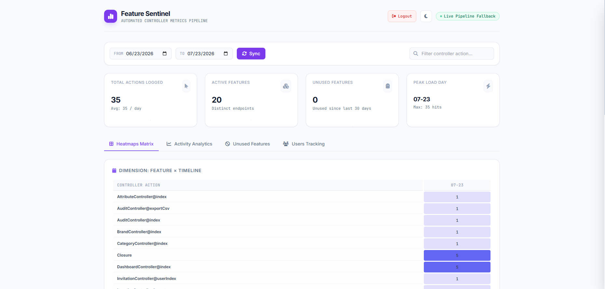
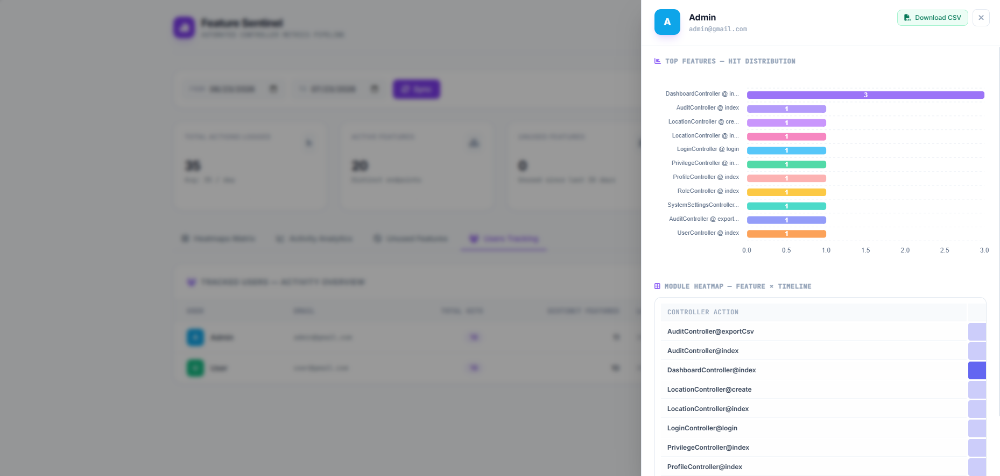
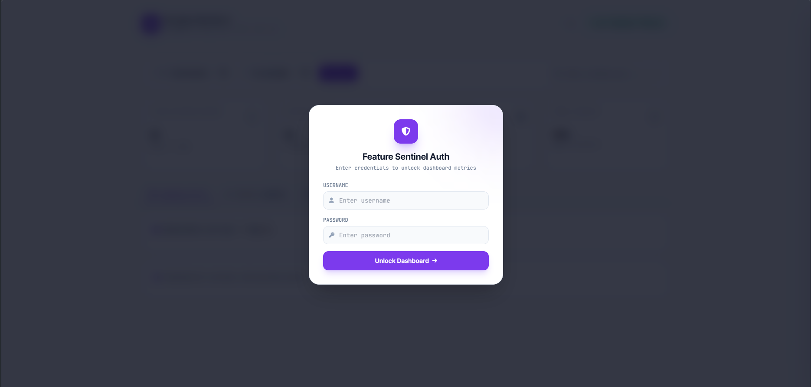

Laravel Feature Heatmap
A zero-setup feature usage tracker and heatmap dashboard for Laravel. Understand which controller actions and routes are being used, by whom, and how often.
Controller/action, route name, HTTP method, URI, authenticated user identity, timestamps, and daily usage frequency.
Requirements
Installation
Install the package through Composer:
composer require farukcoder/laravel-feature-heatmapThe package uses Laravel package auto-discovery, so no manual service provider registration is required.
Publish configuration Optional
php artisan vendor:publish --tag=feature-heatmap-configRun migrations
php artisan migrateThis creates feature_usage_logs for raw request events and feature_usage_summaries for aggregated daily statistics.
Open the dashboard
After installation and migration, visit:
https://your-app.test/feature-heatmap
The interface includes heatmap matrices, activity analytics, unused feature discovery, and user tracking.
Automatic global tracking
Automatic tracking is enabled by default. The package attaches its middleware to Laravel's web and api route groups, so no changes are needed in web.php, api.php, or Kernel.php.
Once installed, normal application traffic begins producing usage data automatically.
Manual middleware mode
Disable automatic tracking when you only want selected routes included:
FEATURE_HEATMAP_AUTO_TRACK=falseThen apply the named middleware:
Route::middleware(['web', 'auth', 'track.feature'])
->group(function () {
Route::get('/orders', [OrderController::class, 'index']);
});Daily aggregation and pruning
For production applications, schedule the aggregation command once per day. It summarizes raw events and can prune old records.
use Illuminate\Support\Facades\Schedule;
Schedule::command('feature-heatmap:aggregate --prune')
->dailyAt('01:00');protected function schedule(Schedule $schedule): void
{
$schedule->command('feature-heatmap:aggregate --prune')
->dailyAt('01:00');
}User tracking and CSV reports
The Users Tracking tab lists active users, total hits, distinct features, and last seen time. Open a user to view a feature distribution and timeline heatmap, or download a CSV activity report.

Configuration
After publishing the configuration file, adjust tracking and dashboard behavior in config/feature-heatmap.php.
return [
'enabled' => env('FEATURE_HEATMAP_ENABLED', true),
'auto_track' => env('FEATURE_HEATMAP_AUTO_TRACK', true),
'use_queue' => env('FEATURE_HEATMAP_USE_QUEUE', true),
'queue_name' => env('FEATURE_HEATMAP_QUEUE', 'default'),
'raw_log_retention_days' => 14,
'excluded_patterns' => [
'^_debugbar',
'^horizon',
'^telescope',
'^feature-heatmap',
],
'route_prefix' => 'feature-heatmap',
'route_middleware' => ['web', 'auth'],
'user_name_column' => 'name',
'user_email_column' => 'email',
];enabledTurn all package tracking on or off.auto_trackAttach middleware automatically to web and API routes.use_queueWrite events asynchronously through Laravel queues.raw_log_retention_daysChoose how long raw logs remain before pruning.excluded_patternsRegex patterns for routes that should never be tracked.route_middlewareMiddleware protecting the dashboard.Environment variables
FEATURE_HEATMAP_ENABLED=true
FEATURE_HEATMAP_AUTO_TRACK=true
FEATURE_HEATMAP_USE_QUEUE=false
FEATURE_HEATMAP_QUEUE=default
FEATURE_HEATMAP_AUTH_ENABLED=true
FEATURE_HEATMAP_USERNAME=admin
FEATURE_HEATMAP_PASSWORD=your_secure_passwordDashboard authentication
The package can display its own login screen for the metrics dashboard. Set a strong username and password in your environment and never commit real credentials to source control.

Protect the dashboard behind HTTPS, application authentication, and authorization appropriate for your team.
Troubleshooting
No activity is appearing
Confirm the package is enabled, automatic tracking is on, migrations ran successfully, and the current URI does not match an excluded pattern.
Queued records are not saved
Start a queue worker or temporarily set FEATURE_HEATMAP_USE_QUEUE=false to verify the rest of the integration.
The dashboard returns 403 or redirects
Review route_middleware, your application authentication state, and the package dashboard authentication environment variables.